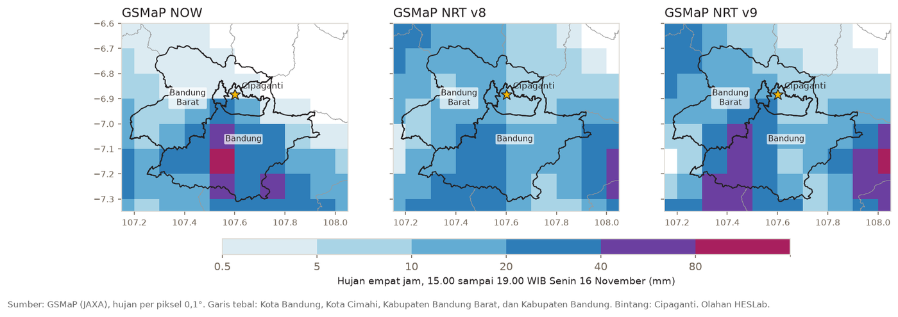

Senin sore, 16 November 2026, tanggul Sungai Cikalintu di Cipaganti, Kecamatan Coblong, Kota Bandung, jebol untuk kedua kalinya dalam sekitar dua pekan. Air masuk ke puluhan rumah di permukiman padat dekat Jalan Cihampelas. Tulisan ini membaca hujan sore itu dengan tiga produk satelit GSMaP yang terbit cepat (NOW, NRT v8, dan NRT v9). Ketiganya sepakat bahwa hujan turun sekitar pukul 15.00 sampai 19.00 WIB. Namun di sekitar Cipaganti hujannya tidak lebat. Hujan lebat sore itu jatuh di Kabupaten Bandung bagian selatan.

Apa yang tercatat di lapangan
Senin sore, aliran Sungai Cikalintu tersumbat sampah dan batang pohon yang terbawa dari hulu, lalu tanggulnya jebol. Tanggul itu sedang diperbaiki dan untuk sementara ditahan dengan drum. BPBD Kota Bandung memperkirakan 20 sampai 30 rumah kemasukan air. Tidak ada korban jiwa, dan pendataan kerusakan masih berlangsung. Menurut BPBD, debit air saat itu tidak terlalu besar. Berita kejadian ini sudah terbit pukul 18.11 WIB (IDN Times Jabar).
Tanggul yang sama sudah jebol sekitar dua pekan sebelumnya, juga pada malam hari, setelah hujan deras. Waktu itu 34 rumah dan 112 sampai 114 warga RW 01 Cipaganti terdampak. BPBD menyebut belum adanya sistem pengalihan air di hulu sebagai salah satu sebabnya (Metro TV, NU Online).
Apa kata satelit
Satu piksel GSMaP berukuran 0,1 derajat, sekitar 11 × 11 km. Cipaganti berada di dekat pojok barat daya piksel yang berpusat di 6,85° LS dan 107,65° BT, yang mencakup Bandung bagian utara sampai sekitar Lembang.
| Senin 16 November, 12.00–23.00 WIB | NOW | NRT v8 | NRT v9 |
|---|---|---|---|
| Piksel Cipaganti, jumlah (mm) | 1,6 | 10,3 | 8,3 |
| Piksel Cipaganti, jam terderas (mm) | 0,8 | 4,0 | 3,1 |
| Rata-rata 3 × 3 piksel, jumlah (mm) | 6,6 | 11,3 | 10,7 |
| Rata-rata 3 × 3 piksel, jam terderas (mm) | 2,9 | 3,7 | 4,5 |
| Rata-rata Kabupaten Bandung, jumlah (mm) | 37,5 | 16,9 | 20,8 |
Ketiga produk sepakat soal waktunya. Hujan mulai pada jam yang berakhir pukul 15.00 WIB, paling deras pada jam yang berakhir pukul 16.00 dan 17.00, lalu reda setelah pukul 19.00. Jam terderas di piksel Cipaganti hanya 3 sampai 4 mm menurut NRT v8 dan v9. NOW hampir tidak mencatat hujan di piksel itu.
Piksel di sebelah barat daya Cipaganti, yang mencakup Bandung bagian barat dan selatan Cimahi, mencatat hujan lebih deras. Pada jam yang berakhir pukul 17.00, NOW mencatat 21 mm, NRT v9 17 mm, dan NRT v8 7 mm. Piksel ini tidak berada di hulu Cikalintu.

Peta empat jam memperlihatkan inti hujan sore itu. Hujan 40 sampai 100 mm dalam empat jam jatuh di Kabupaten Bandung bagian selatan dan barat daya. Di piksel Cipaganti, hujan empat jam itu kurang dari 10 mm: 0,6 mm menurut NOW, 9,2 mm menurut NRT v8, dan 7,5 mm menurut NRT v9. Rata-rata Kabupaten Bandung sepanjang siang sampai malam (17 sampai 38 mm) jauh lebih besar daripada hujan di sekitar Cipaganti.
Apa artinya
Menurut satelit, hujan sore itu di sekitar Cipaganti tergolong ringan sampai sedang. Ini sejalan dengan keterangan BPBD bahwa debit sungai tidak terlalu besar. Tanggul yang sedang diperbaiki dan sumbatan sampah serta batang pohon kemungkinan lebih menentukan daripada besarnya hujan. Kejadian seperti ini tidak bisa diperingatkan dari hujan saja.
Hujan lokal yang lebih deras dari catatan satelit tetap mungkin terjadi. Daerah tangkapan Cikalintu jauh lebih kecil daripada satu piksel GSMaP, dan hujan deras yang singkat bisa hanya menutupi beberapa kilometer. Untuk memastikannya dibutuhkan data pos hujan di Bandung utara.
Batasan
- Nilai adalah hujan per piksel 0,1° atau rata-rata kabupaten dari satelit. Hujan di satu titik bisa jauh lebih besar.
- GSMaP NOW hanya memakai paruh pertama tiap jam, sehingga hujan singkat bisa terlewat.
- Ketiga produk tidak dikoreksi dengan pos hujan. Produk Standard untuk tanggal ini baru tersedia sekitar tiga hari kemudian.
- Tulisan ini tidak memakai data pos hujan, tinggi muka air sungai, atau peta daerah tangkapan Sungai Cikalintu.
Rujukan
- IDN Times Jabar, 16 November 2026. Sungai Cikalitu Bandung meluap, puluhan rumah terdampak.
- Metro TV, 31 Oktober 2026. Tanggul Sungai Cikalintu jebol, 114 warga Bandung terdampak.
- NU Online, 3 November 2026. Banjir bandang terjang Tanah Datar, tanggul jebol di Bandung; puluhan rumah terdampak.
- JAXA. GSMaP NOW, NRT v8, dan NRT v9 (tanpa koreksi pos hujan), per piksel dan rata-rata per kabupaten/kota, diolah HESLab.